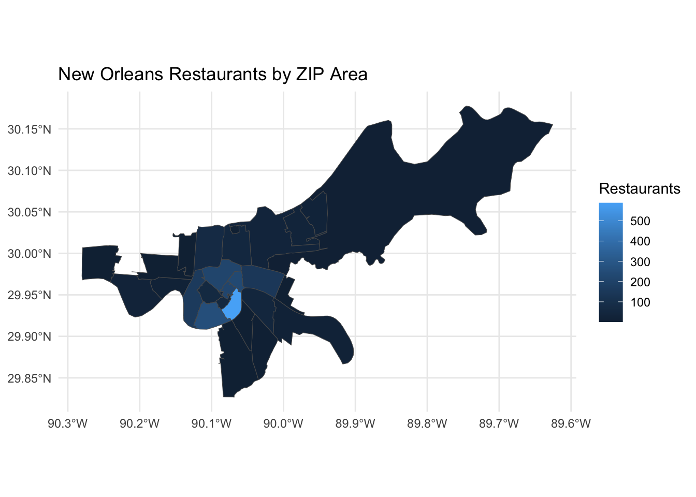
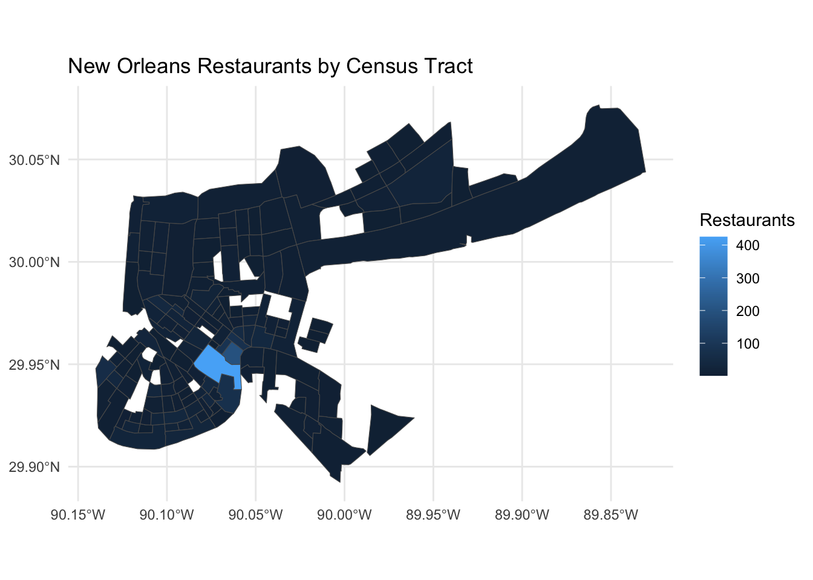

library(tidyverse)
library(sf)
library(tigris)
restaurants <- readRDS("data/new_orleans/business.rds")
restaurants_sf <- st_as_sf(
restaurants,
coords = c("longitude", "latitude"),
crs = 4326,
remove = FALSE
)Homework 6 - Geographic Analysis
Geographic Area Analysis
To carry out this step, I performed a comparison of ZIP Code Tabulation Areas (ZCTAs) and census tracts in the context of New Orleans restaurant data. My evaluations involved the numbers of restaurants which were matched in each of these geographical areas, ratings for their average scores as well as unmatched restaurants in the two geographical systems.
ZIP/ZCTA Analysis
First, I used ZIP Code Tabulation Areas and matched each restaurant to a ZCTA.
zips <- zctas(
cb = TRUE,
year = 2020
)
zips <- st_transform(zips, 4326)
restaurants_zip <- st_join(
restaurants_sf,
zips["ZCTA5CE20"]
)
zip_summary <- restaurants_zip |>
st_drop_geometry() |>
group_by(ZCTA5CE20) |>
summarise(
restaurants = n(),
average_rating = mean(stars)
) |>
arrange(desc(restaurants))
knitr::kable(
head(zip_summary, 10),
col.names = c("ZIP/ZCTA", "Restaurants", "Average Rating"),
digits = 2,
caption = "Top 10 ZIP/ZCTA Areas by Number of Restaurants"
)| ZIP/ZCTA | Restaurants | Average Rating |
|---|---|---|
| 70130 | 588 | 3.69 |
| 70115 | 260 | 3.87 |
| 70116 | 231 | 3.92 |
| 70112 | 215 | 3.70 |
| 70119 | 214 | 3.79 |
| 70118 | 159 | 3.73 |
| 70117 | 143 | 4.09 |
| 70124 | 69 | 3.64 |
| 70113 | 60 | 3.98 |
| 70125 | 58 | 3.62 |
All 2,259 restaurants were matched to a ZCTA. There were 29 ZCTAs containing restaurants in the data.
zip_map <- zips |>
inner_join(zip_summary, by = "ZCTA5CE20")
ggplot(zip_map) +
geom_sf(aes(fill = restaurants)) +
labs(
title = "New Orleans Restaurants by ZIP Area",
fill = "Restaurants"
) +
theme_minimal()
Census Tract Analysis
Next, I compared the ZCTA results with census tracts in Orleans Parish.
tracts <- tracts(
state = "LA",
county = "Orleans",
cb = TRUE,
year = 2020
)
tracts <- st_transform(tracts, 4326)
restaurants_tract <- st_join(
restaurants_sf,
tracts["GEOID"]
)
tract_summary <- restaurants_tract |>
st_drop_geometry() |>
group_by(GEOID) |>
summarise(
restaurants = n(),
average_rating = mean(stars)
) |>
arrange(desc(restaurants))
knitr::kable(
head(tract_summary |> filter(!is.na(GEOID)), 10),
col.names = c("Census Tract", "Restaurants", "Average Rating"),
digits = 2,
caption = "Top 10 Census Tracts by Number of Restaurants"
)| Census Tract | Restaurants | Average Rating |
|---|---|---|
| 22071013400 | 425 | 3.67 |
| 22071013502 | 197 | 3.69 |
| 22071013501 | 87 | 3.82 |
| 22071003800 | 76 | 3.90 |
| 22071007700 | 74 | 3.80 |
| 22071012900 | 59 | 3.87 |
| 22071002600 | 49 | 3.84 |
| 22071013900 | 43 | 3.77 |
| 22071005400 | 41 | 3.39 |
| 22071001200 | 39 | 4.10 |
There were 145 census tracts containing matched restaurants. There were also 57 restaurants that did not match a census tract.
tract_map <- tracts |>
inner_join(
tract_summary |> filter(!is.na(GEOID)),
by = "GEOID"
)
ggplot(tract_map) +
geom_sf(aes(fill = restaurants)) +
labs(
title = "New Orleans Restaurants by Census Tract",
fill = "Restaurants"
) +
theme_minimal()
Comparison
comparison <- tibble(
geography = c("ZIP/ZCTA", "Census Tract"),
areas_with_restaurants = c(29, 145),
unmatched_restaurants = c(0, 57)
)
knitr::kable(
comparison,
col.names = c(
"Geographic System",
"Areas with Restaurants",
"Unmatched Restaurants"
),
caption = "Comparison of Geographic Systems"
)| Geographic System | Areas with Restaurants | Unmatched Restaurants |
|---|---|---|
| ZIP/ZCTA | 29 | 0 |
| Census Tract | 145 | 57 |
Geographic Area Choice
I opted for the various ZIP/ZCTA areas as they were the most appropriate geographical area for my analysis. Even though both these geographical systems can offer information on the concentration of the respective restaurants, ZIP areas are much better in this specific dataset. All 2,259 restaurants matched to ZIP/ZCTA areas, while 57 restaurants did not match to a census tract. The ZIP analysis also comprises 29 areas with restaurants in comparison to 145 census tracts therefor making the comparison much easier. Therefore, I can say that ZIP/ZCTA area is the preferable geographical area for the analysis.